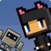
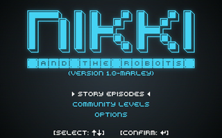
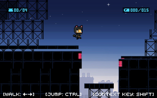
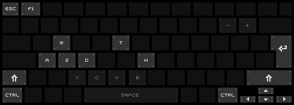
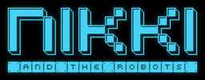

Nikki and the Robots
Dieser Artikel wurde für die folgenden Ubuntu-Versionen getestet:
Ubuntu 14.04 Trusty Tahr
Zum Verständnis dieses Artikels sind folgende Seiten hilfreich:

Nikki and the Robots 

 ist ein Jump’n’Run-Spiel aus der Feder der Joyride Laboratories GbR. Im Spiel begleitet man das katzenähnliche Wesen Nikki auf einer geheimen Mission gegen den bösen Dr. Lacroix. Die in den einzelnen Leveln anzutreffenden Roboter können mittels der Terminals für eigene Zwecke eingesetzt werden...
ist ein Jump’n’Run-Spiel aus der Feder der Joyride Laboratories GbR. Im Spiel begleitet man das katzenähnliche Wesen Nikki auf einer geheimen Mission gegen den bösen Dr. Lacroix. Die in den einzelnen Leveln anzutreffenden Roboter können mittels der Terminals für eigene Zwecke eingesetzt werden...
Der kostenlose Teil des Spiels beinhaltet die Spiel-Engine, ein Tutorial, einen Leveleditor und die Möglichkeit, die erstellten Level mit anderen Spielern zu teilen. Die käuflich zu erwerbenden Story Episodes enthielten neue, exklusive Grafiken, zusätzliche Level und weitere Charaktere. Die Entwicklung des Spiels wurde aufgrund zu geringer Verkaufszahlen im Januar 2013 eingestellt.
|  |  |
| Menü | Spielszene |
Installation¶
Basisspiel¶
Von joyridelabs.de  oder holarse die Spiel-Engine für die eigene Rechnerarchitektur (32-Bit / 64-Bit) herunterladen und entpacken [1] – z.B. nach ~/Spiele/nikki. Anschließend kann das Spiel über
oder holarse die Spiel-Engine für die eigene Rechnerarchitektur (32-Bit / 64-Bit) herunterladen und entpacken [1] – z.B. nach ~/Spiele/nikki. Anschließend kann das Spiel über nikki.sh aus dem Installationsverzeichnis heraus gestartet [2] werden. Auf Wunsch kann ein Menüeintrag [3] vorgenommen werden.
Hinweis:
Beim ersten Start wird im Homeverzeichnis der versteckte Ordner ~/.nikki angelegt.
Episoden¶
Zusätzliche Spielinhalte konnten auf joyridelabs.de käuflich erworben werden. Der Registrierungsschlüssel wurde an die hinterlegte E-Mail-Adresse zugesendet. Das Spiel wurde anschließend neu gestartet und über "STORY EPISODES (BUY NOW) -> LOGIN AND INSTALL THE STORY EPISODES" die E-Mail-Adresse sowie den Schlüssel eingegeben. Der Inhalt wurde anschließend heruntergeladen und stand nach einem Neustart des Spiels zur Verfügung. Die heruntergeladenen Inhalte wurden unter ~/.nikki-story-mode abgespeichert.
Update¶
Bei jedem Spielstart überprüfte die Software (bei bestehender Internetverbindung), ob Updates zur Verfügung standen und informierte darüber mit einem entsprechenden Menüeintrag. Diese Funktion steht nicht mehr zur Verfügung.
Bedienung¶
Nach dem Spielstart präsentiert sich das Hauptmenü:
| Hauptmenü | |
| Menüpunkt | Beschreibung |
| "STORY EPISODES (BUY NOW)" | Episoden beim Entwicklerstudio erwerben bzw. freischalten. |
| "COMMUNITY LEVELS" | Level von anderen Benutzern herunterladen und spielen / Level mit dem Editor erstellen. |
| "OPTIONS" | Feineinstellungen am Spiel vornehmen u.a. Tastenbelegung ändern. |
| "QUIT" | Spiel beenden. |
|  |
| Tastenbelegung Leveleditor |
Leveleditor¶
Über "COMMUNITY LEVELS -> EDITOR" startet man den Leveleditor. Die folgenden Seiten führen in die Erstellung eines eigenen Levels ein:
Die erschaffenen Kreationen sind über "COMMUNITY LEVELS -> YOUR LEVELS" zu erreichen.
Level aus der Community sind im Verzeichnis ~/.nikki-free-levels zu finden.
Tipps¶
Registrierungsschlüssel¶
Über die Internetseite der Entwickler ist es möglich, dass man sich den Registrierungsschlüssel erneut zusenden lassen kann.
Tastenkürzel¶
| Tastenkürzel | |
| Taste(n) | Beschreibung |
| ↑ + ↓ + ← + → | Nikki steuern / Navigation im Terminal / Steuerung im Menü |
| Strg | Springen. / Auswahl tätigen. |
| ⇧ | Ein Terminal verwenden. |
| F11 / Alt + ⏎ | Fenster- / Vollbildmodus |
| Esc | Zurück / Level beenden. |

Infobox¶
| Nikki and the Robots | |
| Originaltitel: | Nikki and the Robots |
| Genre: | Jump'n'Run |
| Sprache: | |
| Veröffentlichung: | 2012 |
| Entwickler: | Joyride Laboratories GbR |
| minimale Systemvoraussetzungen: | - |
| Medien: | Download |
| Strichcode / EAN / GTIN: | - |
| Läuft mit: | nativ |

- Erstellt mit Inyoka
-
 2004 – 2017 ubuntuusers.de • Einige Rechte vorbehalten
2004 – 2017 ubuntuusers.de • Einige Rechte vorbehalten
Lizenz • Kontakt • Datenschutz • Impressum • Serverstatus -
Serverhousing gespendet von